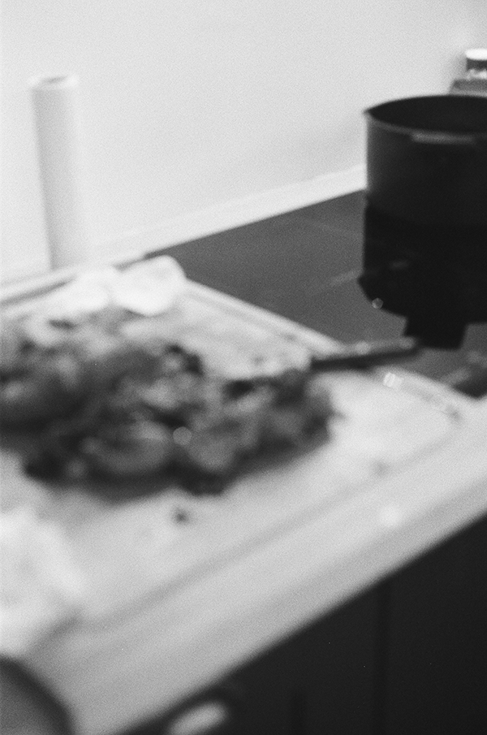
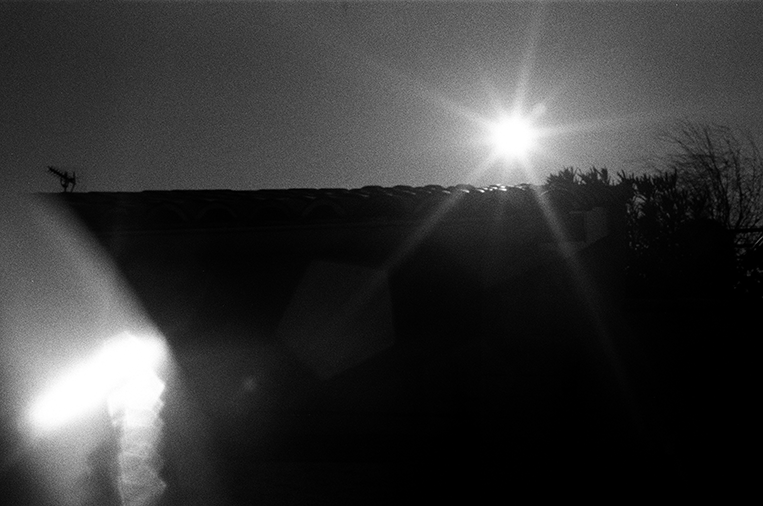
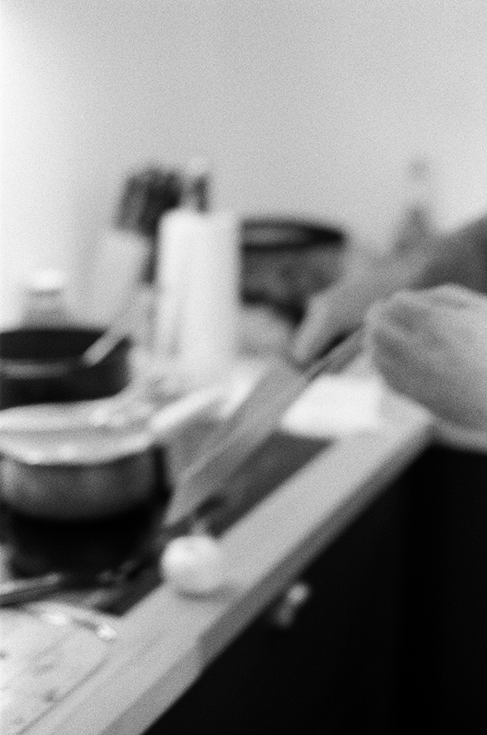
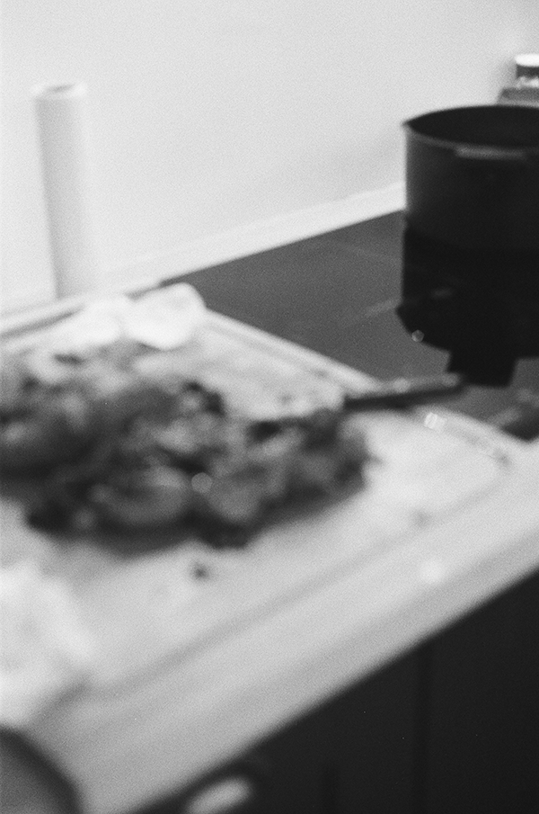
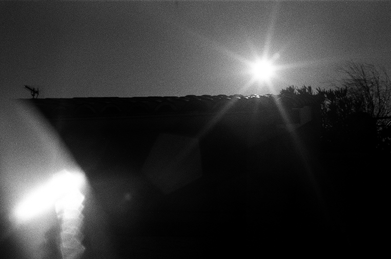
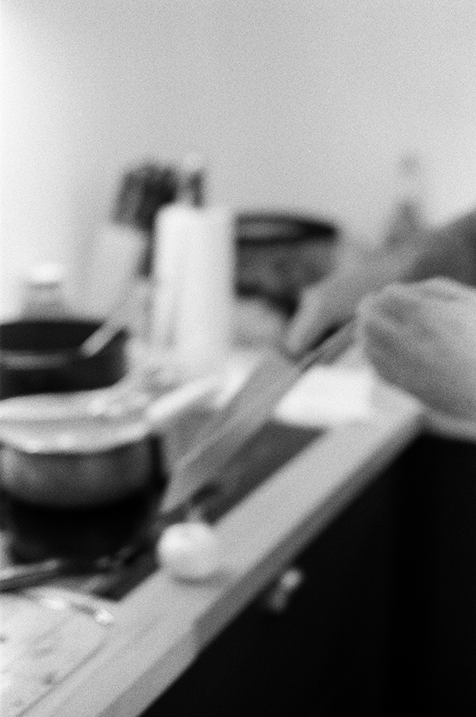

- Une fois et pas plus
- Date : 02/2023 > 03/2023
- Domaine : photographie
En partant de la série du même nom, de Corinne Mercadier (photographe française du XXIe siècle connue pour la réalisation de clichés fantasmagoriques), j'ai créé cette série photo , en jouant sur l’accident, sur ce qui ne peut pas être reproduit à l’identique (en photographie). J'ai donc décidé de réaliser cette série à l’argentique , en jouant, moi aussi, avec le flou, l'erreur, l'effacement, le mouvement, le hors-cadre, l'aléatoire. Et je me suis laissée porter par les résultats rendus par l'argentique et sa texture, grain, que j’apprécie.

 




